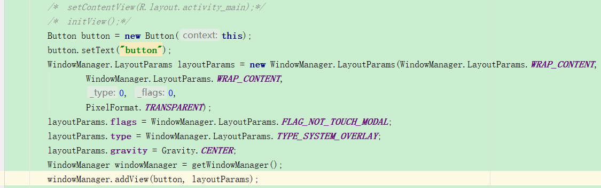

用户交互使用的控件以及Window：
windowManager：
1.windowManager的使用：
windowManager总共有三个方法：addview（View view，LayoutPraams params）；updataViewLayout（View view，ViewGroup.LayoutParams params）; removeView(View view);分别代表添加，更新，删除view。下面是一个通过manager添加window的例子：


2.WindowManager的内部机制：

3.window在各个view中的创建过程：view是android中国呈现使徒的方法，但是view不能的单独存在，必须依附在window这个抽象的概念上。所以有view的地方就有winddow
（1）.Activity中window的创建过程：
Activity的window创建就在attach方法中：mWindow=PoilyManager.makeNewWindow(this);可以看出window是PoliyManager的makeNewWindow方法创建的，在Poliy类中有makeNewMindow（）方法，返回PhoneWindow（）window的实现类

activity视图主要是由setContentVIaew这个方法附属到Window上的：

他又将事情交给了winddow来处理：

2.Dialog的Window创建过程：


Dialog：
普通对话框：


单选对话框：


多选对话框：


进度对话框：


自定义对话框：


notification实现的步骤：
1.获取NotificationManager实例管理对象
NotificationManager notifyManager = (NotificationManager) getSystemService(Context.NOTIFICATION_SERVICE);
2.实例Notification对象
NotificationCompat.Builder builder = new NotificationCompat.Builder(this)
Notification notification= new NotificationCompat.Builder(Context).build();
3.管理事件Intent

4.发送通知
mNotificationManager.notify(notifyId, mBuilder.build());


有关PendingIntent的用法：


Snackbar:
这里调用Snackbar的make()方法来创建一个Snackbar对象，make()方法的第一个参数需要传入一个view，只要是当前界面布局的任意一个view都可以，Snackbar会使用这个view来自动查找最外层的布局，用于展示Snackbar。第二个参数就是Snackbar中显示的内容，第三个参数是Snackbar显示的时长。这些和Toast都是类似的。接着这里又调用了一个setAction()方法来设置一个动作，从而让Snackbar不仅仅是一个提示，而是可以和用户进行交互的。最后调用show()方法让Snackbar显示出来


PopupWindow:

1.Popupwindow的相关函数
（1）.构造函数

(2).显示函数：


3.设置popupwindow的进出动画
（1）在anim文件夹目录下写进入退欧出的动画，
（2）在style文件下写动画style
（3）设置动画style：popwindow.setAnimationStyle(R.style.pop_anim);